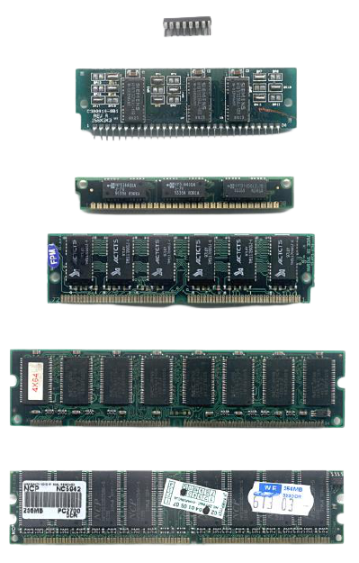
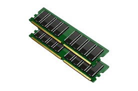
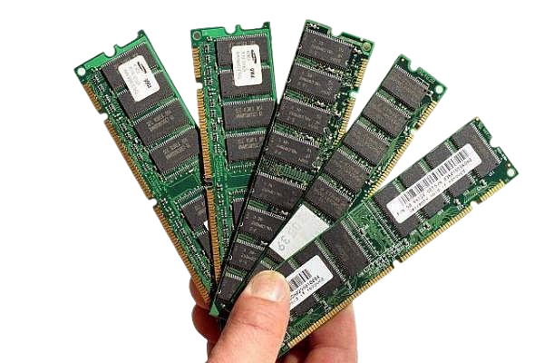

RAM (Random Access Memory) je pamäť s voľným (náhodným, ľubovoľným) prístupom . Čas zápisu dopamäte je rovnaký bez ohľadu na umiestnenie údaja v pamäti. Jej opakom je pamäť so sekvenčným prístupom. Prvé polovodičové RAM prišli na trh na začiatkusedemdesiatych rokov.
RAM v užšom zmysle

Dnes sa používa označenie RAM nepresne len ako synonymum pre operačnú pamäť (pozostáva z RAM článkov) alebo len pre RWM (Read-Write Memory = Pamäť pre čítanie a zápis). Pamäte typu RAM sú dnes výhradne polovodičové, kedysi sa používali pamäte napríklad feritové, pamäte na tenkých vrstvách či bubnové pamäte. Polovodičové RAM sú veľmi rýchle, ale sú drahšie ako iné typy. Používajú sa predovšetkým ako operačné pamäte počítačov. Slúžia na ukladanie údajov, ktoré počítač potrebuje na spracovanie práve vykonávanej úlohy. Označenie RAM sa niekedy nepresne používa aj ako synonymum len pre DRAM.
Externá RAM

Údaje, ktoré treba uchovať aj po vypnutí počítača sa ukladajú do externej pamäte počítača typu RAM - to je napr. disková mechanika, CD-ROM, disketa a.i., ktoré sú podstatne pomalšie ako polovodičová RAM, ale nezávislé od napájania, lacnejšie a môžu mať podstatne vyššie kapacity.